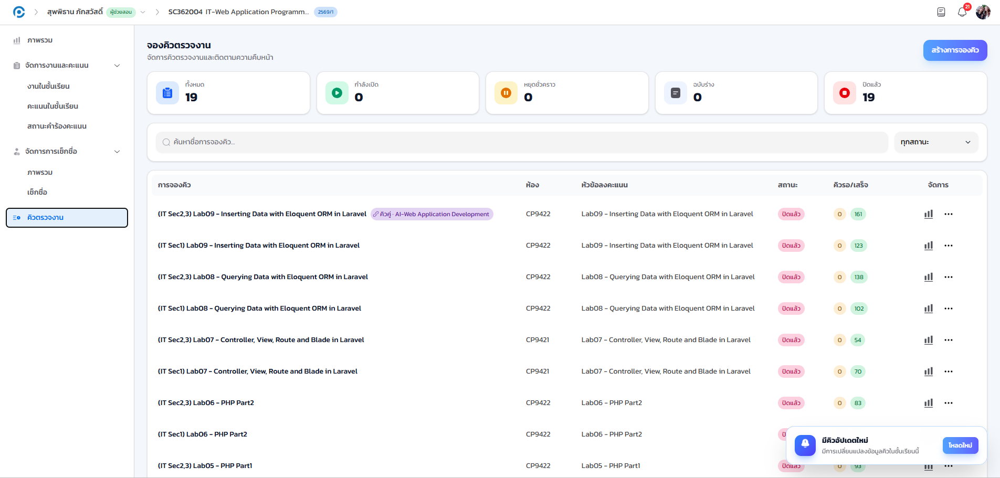
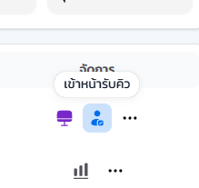
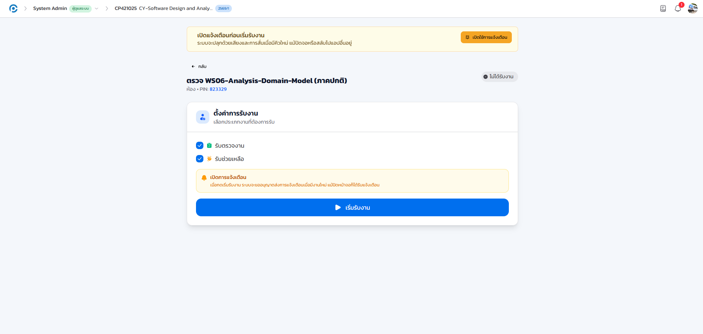
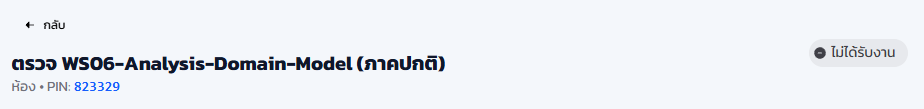
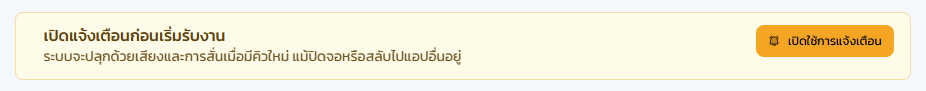

16.1 ภาพรวม#
ระบบคิวช่วยจัดลำดับการตรวจงานและการขอคำปรึกษาในห้องปฏิบัติการให้เป็นระเบียบและยุติธรรม นักศึกษาจองคิวผ่าน QR / PIN / โต๊ะ (ดูมุมมองฝั่งนักศึกษาในบทที่ 19) ส่วนผู้ช่วยสอนจะเข้า หน้ารับงาน (Worker) เพื่อรับและตรวจงานตามลำดับ หน้าจอนี้เป็นหน้าเดียวกับที่อาจารย์ใช้ (อธิบายไว้ในบทที่ 11) เพียงแต่ผู้ช่วยสอนจะเข้าจากไอคอนผู้ตรวจของรอบคิวที่ได้รับมอบหมาย
ภาพประกอบส่วนใหญ่ของบทนี้ยังเป็นภาพชั่วคราวที่ยืมจากมุมมองอาจารย์ (หน้าจอเดียวกัน) เนื่องจากทีมจัดทำคู่มือยังไม่ได้ถ่ายภาพจริงจากบัญชีผู้ช่วยสอนครบทุกขั้นตอน ขั้นตอนที่อธิบายเป็นข้อความยืนยันตรงกับพฤติกรรมจริงของระบบเสมอ ส่วนภาพจะถูกแทนที่เมื่อถ่ายครบ (ดูคำถามที่พบบ่อยท้ายบท)
16.2 ดูและเปิดรอบคิว#
เป้าหมายของขั้นตอนนี้ เข้าถึงรอบคิวที่ได้รับมอบหมาย และเปิดรอบใหม่ได้เองหากได้รับสิทธิ์จัดการคิว
- เข้าเมนู คิวตรวจงาน ที่แถบด้านซ้ายของรายวิชา ระบบแสดงรายการรอบคิวทั้งหมด
- หากได้รับสิทธิ์จัดการคิว คลิกปุ่ม สร้างการจองคิว เพื่อเปิดรอบใหม่ กำหนดชื่อคิว ห้อง และการเชื่อมโยงกับหัวข้องานหรือการเช็กชื่อ (ขั้นตอนเดียวกับที่อาจารย์ใช้ ดูรายละเอียดในบทที่ 11)
- เมื่อรอบคิวถูกสร้าง (สถานะ ฉบับร่าง) คลิกปุ่ม เริ่ม (▶) ท้ายแถวเพื่อเปิดรอบ สถานะจะเปลี่ยนเป็น กำลังเปิด
- เมื่อรอบ กำลังเปิด แล้ว คลิกไอคอน ผู้ตรวจ ท้ายแถวเพื่อเข้าหน้ารับงานและเริ่มทำงาน

เมื่อกดเริ่มรอบ สถานะในรายการจะเปลี่ยนจาก "ฉบับร่าง" เป็น "กำลังเปิด" และไอคอนผู้ตรวจจะเปิดใช้งานได้ทันที
16.3 เข้าหน้ารับงานและตั้งค่าก่อนเริ่ม#
เป้าหมายของขั้นตอนนี้ ตั้งค่าประเภทงานที่ต้องการรับ ก่อนเริ่มรับคิวจริง
- เมื่อคลิกไอคอนผู้ตรวจ ระบบเปิด หน้ารับงาน (Worker) ในแท็บใหม่ ส่วนหัวแสดงชื่อรอบคิว ห้อง และ PIN ของรอบนั้น
- เลือก ประเภทงานที่ต้องการรับ ได้แก่ รับตรวจงาน และ/หรือ รับช่วยเหลือ
- คลิกปุ่ม เริ่มรับงาน เพื่อเริ่มรับคิว (ระบบอาจขออนุญาตส่งการแจ้งเตือนก่อน แนะนำให้กดอนุญาต ดูหัวข้อ 16.6)

ภาพชั่วคราว รอถ่ายจริง (ยืมจากมุมมองอาจารย์ ซึ่งเป็นหน้าจอเดียวกัน)

ภาพชั่วคราว รอถ่ายจริง
ป้ายสถานะด้านขวาบนของหน้ารับงานเริ่มต้นเป็น ไม่ได้รับงาน เสมอ จนกว่าจะกดเริ่มรับงาน
16.4 ระหว่างรับงาน#
เป้าหมายของขั้นตอนนี้ รับและตรวจงานที่ระบบเสนอมาให้ตามลำดับอย่างเป็นธรรม
- เมื่อกด เริ่มรับงาน แล้ว ป้ายสถานะเปลี่ยนเป็น กำลังรับงาน เมื่อมีนักศึกษาจองคิว ระบบจะ ยิงงานมาให้อัตโนมัติ พร้อมข้อมูลนักศึกษาและโต๊ะ
- ตรวจงานแล้วกด เสร็จสิ้น (complete) เพื่อบันทึกผลและเรียกคิวถัดไป หรือกด ข้าม (skip) หากยังไม่พร้อมตรวจรายนั้น เพื่อส่งต่อให้ผู้ตรวจคนอื่น
- กด หยุดรับงาน เมื่อต้องพักชั่วคราว ระบบจะไม่เสนองานใหม่มาให้จนกว่าจะกดเริ่มรับงานอีกครั้ง

ภาพชั่วคราว รอถ่ายจริง
- กลไกเสนองาน-หมดเวลา-ปฏิเสธ
- ระบบกระจายงานอย่างเป็นธรรม หากไม่ตอบรับภายในเวลาที่กำหนด คิวจะถูกส่งต่อให้ผู้ตรวจคนอื่นโดยอัตโนมัติ
- ส่วนประเภทงานที่รับ
- แสดงตัวเลือกที่ท่านเลือกไว้ในขั้นตอนก่อนเริ่มรับงาน (หัวข้อ 16.3)
เมื่อพักหรือเลิกงาน กรุณากด หยุดรับงาน เสมอ เพื่อไม่ให้ระบบเสนอคิวมาให้ขณะที่ท่านไม่พร้อม และเมื่อสิ้นสุดคาบ ผู้มีสิทธิ์จัดการคิวควรกด หยุดรับคิว ที่หน้ารายการคิวเพื่อปิดรอบด้วย
16.5 รับงานข้ามวิชา (คิวจับคู่ข้ามวิชา)#
เป้าหมายของขั้นตอนนี้ เข้าใจป้ายวิชาต้นทาง เมื่อระบบมอบหมายให้ท่านรับงานจากอีกวิชาหนึ่งในคิวที่เชื่อมกัน
เมื่ออาจารย์สองรายวิชาเชื่อมรอบคิวของตนเข้าด้วยกัน (เช่น ใช้ห้องปฏิบัติการร่วมกัน ตั้งค่าโดยอาจารย์ ดูบทที่ 11) ระบบจะเพิ่มผู้ช่วยสอนที่กำลังรับงานอยู่ในรอบหนึ่งเข้ารับงานของอีกรอบโดยอัตโนมัติด้วย เรียกกลไกนี้ว่า คิวจับคู่ข้ามวิชา (Mirror Queue) ทำให้ท่านรับตรวจงานของวิชาที่ไม่มีสิทธิ์สมาชิกโดยตรงได้ในช่วงที่คิวเชื่อมกันอยู่ เมื่อระบบเสนองานที่มาจากอีกวิชาหนึ่งให้ จะติดป้ายกำกับไว้ชัดเจนเสมอ ไม่ปะปนกับงานของวิชาตนเอง
- ป้ายที่การ์ดงาน
- ข้อความ "จากวิชา" พร้อมรหัสวิชาและชื่อวิชาต้นทางของงานนั้น
- หมายเลขคิว
- ขึ้นต้นด้วยรหัสวิชาต้นทาง เช่น TC321000-Q5 แทนที่จะเป็นหมายเลขคิวของวิชาปัจจุบัน
- หน้าต่างบันทึกผล
- เมื่อเปิดหน้าต่างให้คะแนน จะมีแถบเตือนแจ้งชื่อวิชาต้นทางและชื่องานที่กำลังตรวจซ้ำอีกครั้ง (ดูรายละเอียดการให้คะแนนงานข้ามวิชาในบทที่ 17)
ภาพชั่วคราว รอถ่ายจริง ยังไม่มีภาพจริงของป้ายนี้ทั้งฝั่งอาจารย์และผู้ช่วยสอน
- รับ ตรวจ และกด เสร็จสิ้น หรือ ข้าม เหมือนงานปกติทุกประการ ไม่ต้องตั้งค่าเพิ่มเติมใด ๆ ระบบจัดการสิทธิ์การเข้าถึงงานข้ามวิชาให้อัตโนมัติ
งานข้ามวิชาทุกรายการถูกบันทึกในบันทึกกิจกรรมของทั้งสองรายวิชา อาจารย์เจ้าของวิชาต้นทางจึงตรวจสอบย้อนหลังได้เสมอว่าใครเป็นผู้ตรวจงานของนักศึกษาตน
16.6 การแจ้งเตือนคิวใหม่#
เป้าหมายของขั้นตอนนี้ เปิดสิทธิ์แจ้งเตือนของเบราว์เซอร์ เพื่อไม่พลาดคิวใหม่แม้สลับไปทำอย่างอื่น
เมื่อกด เริ่มรับงาน ครั้งแรก ระบบอาจขออนุญาตส่งการแจ้งเตือน (Push Notification) เพื่อปลุกด้วยเสียงหรือการสั่นทันทีที่มีคิวใหม่ แม้สลับหน้าจอไปทำงานอื่นหรือสลับแอปอยู่ แนะนำให้กด อนุญาต เสมอ

ภาพชั่วคราว รอถ่ายจริง
หากเผลอกดปฏิเสธสิทธิ์แจ้งเตือน ระบบจะไม่ขอซ้ำให้อัตโนมัติ ต้องเข้าไปแก้ไขสิทธิ์เว็บไซต์ในตัวเบราว์เซอร์เองภายหลัง